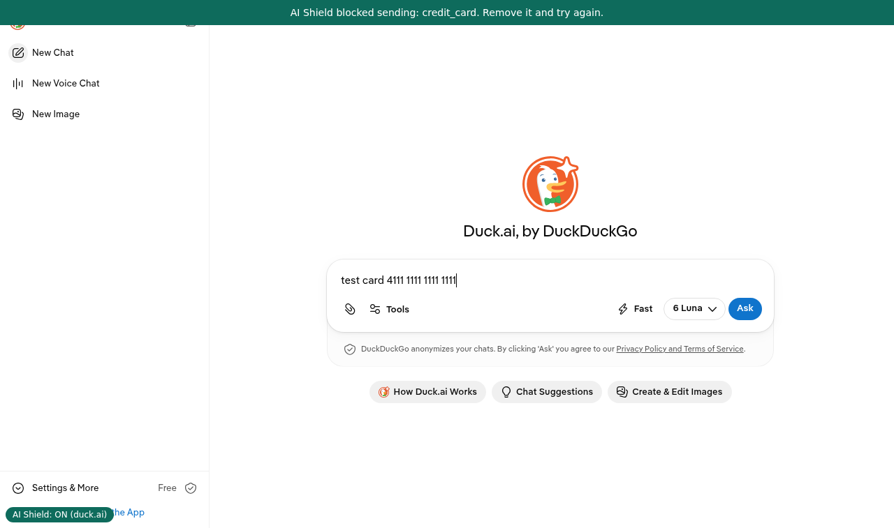
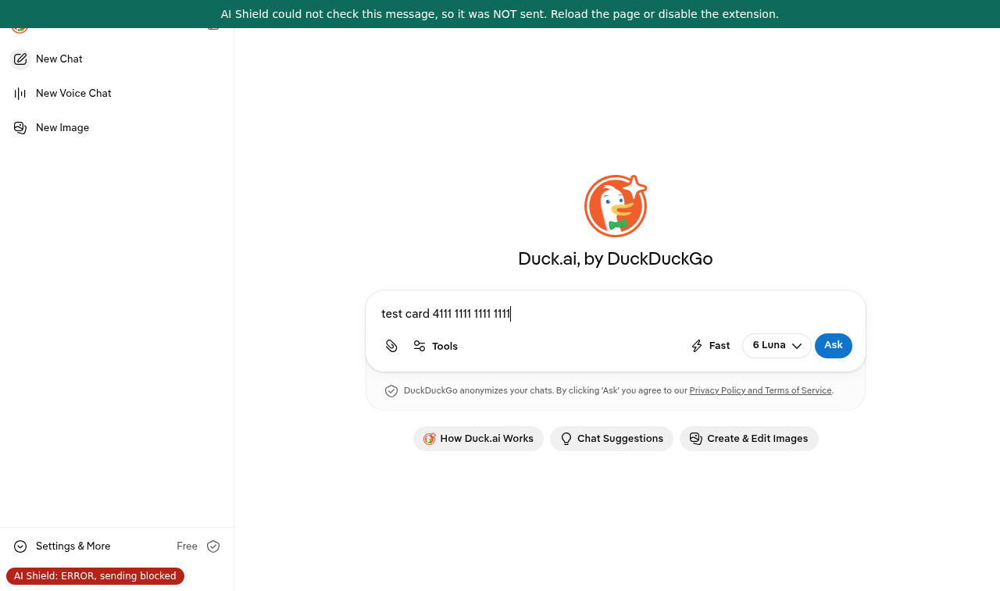
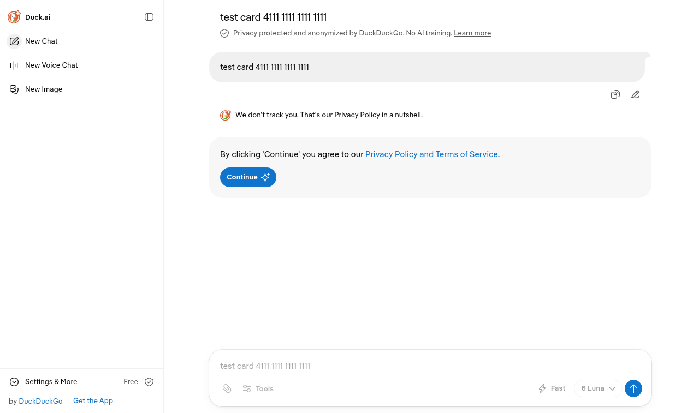

אב-טיפוס 0.2.0. נבדק רק על OpenClaw 2026.11.10, בסביבת בדיקה מבודדת
מצב ברירת מחדל: כללים בלבד (שכבה 1). אין מודל AI פעיל. מודל מקומי הוא תוספת אופציונלית, כבויה, שדורשת הורדה והסכמה נפרדת (ראו "שכבות"). מודל חיצוני לא נבנה.
תוסף שבודק הודעות לפני שהן מגיעות למודל, ועוצר פעולות מסוכנות של הסוכן לפני ביצוע. זה לא "מוגן בהורדה": הוא עובד רק מול OpenClaw, ורק במה שמפורט למטה.
קובץ סכומי בדיקה: SHA256SUMS
sha256 zip 0.2.0: dd3c5cc17b317e377f8634aa07602cdd0e43d44eb2f1b09f682a4353195f5595
sha256 tar.gz 0.2.0: 8b5a9d1d93441a411dc9ef32ded9ac5f4cfbe6b1c9d5c629f047ad9e76e0cbad
גרסה קודמת (0.1.0, כללים בסיסיים בלבד): zip, tar.gz
זה סקריפט shell רגיל, לא מותקן חתום ולא מתקין מקורי. ההתקנה נבדקה על Linux בלבד. התקנה ב-Windows לא נבדקה (נדרש bash, למשל WSL או Git Bash).
דרישות מראש: OpenClaw גרסה 2026.11.10 (נבדקה רק היא) ו-Node 24.16.x או 26.1 ומעלה, כפי שמוגדר בחבילת OpenClaw 2026.11.10 (נבדק עם Node 24.22.3 בלבד). המתקין לא מתקין אותם. נבדק על Linux בלבד. לפני שינוי הוא שומר גיבוי של קובץ ההגדרות ליד המקור (openclaw.json.ai-shield-backup-...).
unzip ai-shield-guard-0.2.0.zip -d ai-shield-guard cd ai-shield-guard bash install.sh # הפעל מחדש את ה-gateway של OpenClaw # הסרה: bash uninstall.sh (מסיר את התוסף ואת רשומת ההגדרות שלו, משאיר שינויים אחרים. הגיבוי לפני ההתקנה נשמר ולא משוחזר אוטומטית, כדי לא למחוק עריכות מאוחרות)
התוסף קורא את טקסט השיחה ורואה קריאות לכלים. כך הוא בודק אותם. OpenClaw דורש הסכמה לכך בהתקנה, ו-install.sh מעביר אותה (--accept-capabilities) בשמך. הרצת הסקריפט היא ההסכמה.
| שכבה | סטטוס |
|---|---|
| 1. כללי ברזל בלי AI (קלט + כלים) | פעילה כברירת מחדל. נבדקה. כללים שנלקחו מהמסמך של יוסי (ראו להלן) |
| 2. מודל AI מקומי (Qwen3Guard-Gen-0.6B) | אופציונלי, כבוי, ניסיוני. הורדה של כ-1.5GB, צריך אינטרנט פעם אחת, Python 3.10+, כ-2GB זיכרון פנוי. ההורדה וההפעלה הן פקודות נפרדות שדורשות --yes. הטקסט לא יוצא מהמחשב. השרת מאזין ל-127.0.0.1 בלבד ולא שומר טקסט. מודל רשמי מ-Qwen (Apache-2.0), נבדק checksum, בלי קוד מרוחק |
| 3. מודל חיצוני | לא נבנה. לא נשלח שום תוכן לספק חיצוני |
המודל יכול רק להחמיר החלטה. כלל קשיח לא מתבטל בגללו. אם הוא מופעל במצב "נדרש" והשרת לא זמין או איטי, ההודעה נעצרת עם הסבר ("לא ניתן היה להריץ בדיקה נדרשת"), ולא עוברת. כלומר "נבדק לפי כללים" שונה מ"לא ניתן לבדוק".
מדידות (מעבדה עם ליבת מעבד אחת, זיכרון 2GB): המודל לבדו כ-2 שניות להודעה. מקצה לקצה דרך OpenClaw כ-30 שניות להודעה באותה מעבדה, כי המודל ו-OpenClaw חולקים ליבה אחת. זה לא מדד לביצועים במחשב נייד, שלא נמדדו. מדגם הבדיקה קטן ומלאכותי (8 הודעות תקיפה, 12 תקינות). הודעה תקינה אחת מתוך 12 סומנה כחשודה ונעצרה (טיוטת מייל ללקוח על עיכוב במשלוח). המודל זיהה בקשה לשלוח משכורות למייל פרטי כ-PII ולא כזליגת מידע: הוא מודל בטיחות תוכן כללי, לא מכיר את המדיניות של העסק. אין מדד עברית מאומת. אין הבטחה לזיהוי כל סיכון.
מקור: maatefet/IMPLEMENTATION.md במאגר gatekeeper-ai-venture-night (כללי המדיניות נקראו מההתחייבות a6a3bfa של יוסי. נבדק ב-02:31 שההתחייבות האחרונה במאגר, 6911671, היא שינוי של חיבור Claude בממשק העובד, 2 קבצים, ולא שינוי מדיניות). "נאכף כאן" = נבדק בתוסף. השאר כתוב במפרט בלבד.
| כלל במפרט | בתוסף |
|---|---|
| ת״ז (ספרת ביקורת), אשראי (Luhn), מפתחות API/פרטיים | נאכף בקלט |
| תוויות סיווג, קידוד חשוד (base64/hex ארוך), ביטויי עקיפת הנחיות בעברית ובאנגלית | נאכף בקלט |
| סוגי קבצים אסורים (pem, key, pfx, env, sql, bak, pst), יעד מייל פרטי, פקודות הרסניות, רמות סיכון 1-3 | נאכף בשער הכלים (כתיבה והרצה חסומות כברירת מחדל) |
| הרשאות לפי תפקיד (RBAC / AD), תקרות קצב וטוקנים, FinOps, הקשר מזוהם, מצב למידה, נפח חריג, אישור מנהל | לא נאכף כאן. דורש זהות ותשתית אישור שאין בתוסף |
OpenClaw אמיתי. המודל בבדיקות היה שרת מדומה שכתבנו, לא AI אמיתי.
| משטח | סטטוס |
|---|---|
| OpenClaw: הודעות קלט וקריאות לכלים | נבדק (מוגבל כפי שמפורט למעלה) |
| מסלול "אושר ואז בוצע" | לא נבדק ולכן כבוי. כתיבה והרצת פקודות חסומות במקום להיות מאושרות. אין כאן הגנת אישור מלאה |
| כלים שלא ברשימה | חסומים. הרשימה המותרת בגרסה זו: read בלבד. הסוכן לא יכול לעשות הרבה, וזה בכוונה |
| מנהל מערכת שמכבה את התוסף | התוסף לא מגן מפני זה. ה-hooks של OpenClaw אינם sandbox |
| אפליקציות AI אחרות במחשב | לא מכוסה. אין חיבור, והגנה כזו אפשרית רק אם האפליקציה חושפת נקודת הרחבה |
| תוסף דפדפן | לא נכלל בהורדה. נבדק רק אב-טיפוס פנימי בדף דמה, לא באתרי AI אמיתיים |
| הגנה ברמת מערכת ההפעלה על כל תוכנה | לא קיים. דורש הרשאות מערכת עמוקות |
| תוסף דפדפן: בדיקת טקסט לפני שליחה בצ'אטים באתרים. לא יכול לעצור פעולות בצד השרת. |
| שער כלים (MCP) לסוכנים אחרים שתומכים בו. |
| מתאמים לאפליקציות AI נוספות, כל אחת לפי נקודות ההרחבה שלה. |
אין כאן אימות שוק, לקוחות או ערובה אבטחתית. הליבה (policy-core.js) כתובה בלי תלות ב-OpenClaw כדי לאפשר מתאמים נוספים.
Narrow claim: a Chrome extension that, on https://duck.ai/* only, stops Enter, Send-click and form submit when the text has a card number, Israeli ID, secret, classification label, long base64/hex or an injection phrase. Page-level guard only. Not a model or network protection, not one-click, not signed, not in the Chrome Web Store. No text is logged or sent anywhere.
Download: ai-shield-browser-duck-0.1.0.zip (sha256 d46d72d46cc174b5a8e64d76c25f770167025964debd2c9a11d4bf05cf639a1b). Install: unzip, chrome://extensions, Developer mode, Load unpacked.
Tested in real Chrome 157, synthetic text, terms never accepted, no real prompt sent: card + Enter blocked; card + Send button blocked; clean text passes; same after New chat. Control without the extension: the page accepts the card text. If the check code throws, sending is blocked and a red badge shows (tested with deliberately broken code). A green badge "AI Shield: ON (duck.ai)" shows when active; no badge means off. Evidence is DOM-level only: duck.ai shows a first-use terms card, so a network attempt could not be shown.
Not tested / not supported: every other site, uninstall mid-session. Bypass: page scripts, files, other browsers, direct network, disabling the extension.


